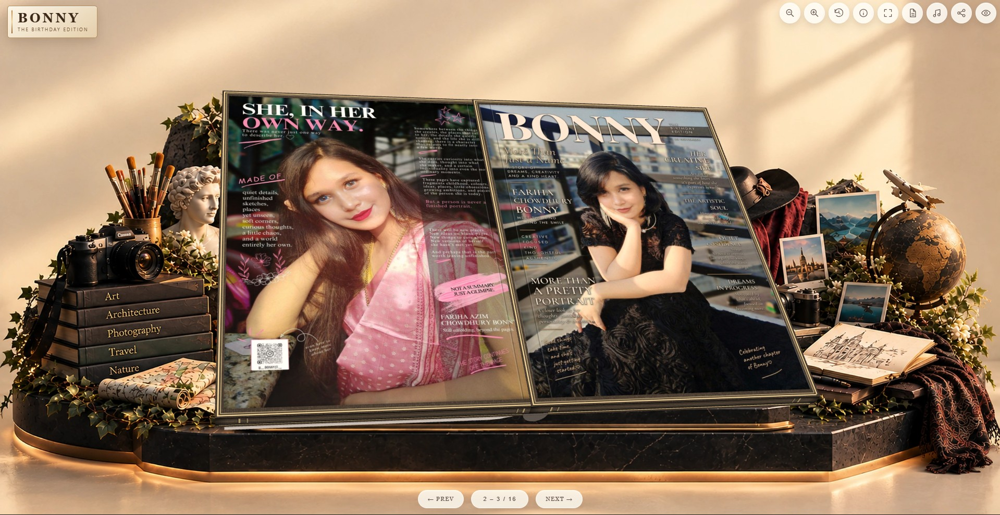

01 / CREATIVE DESIGN · DIGITAL PUBLISHING · WEB
Bonny — The Birthday Edition
A personalized digital birthday magazine built around storytelling, visual design, and an immersive page-by-page presentation.
I shaped the magazine concept, cover and page design, visual storytelling, creative direction, and website presentation.
I brought the feel of an editorial magazine into a browsable digital experience.
Visit Live Project ↗